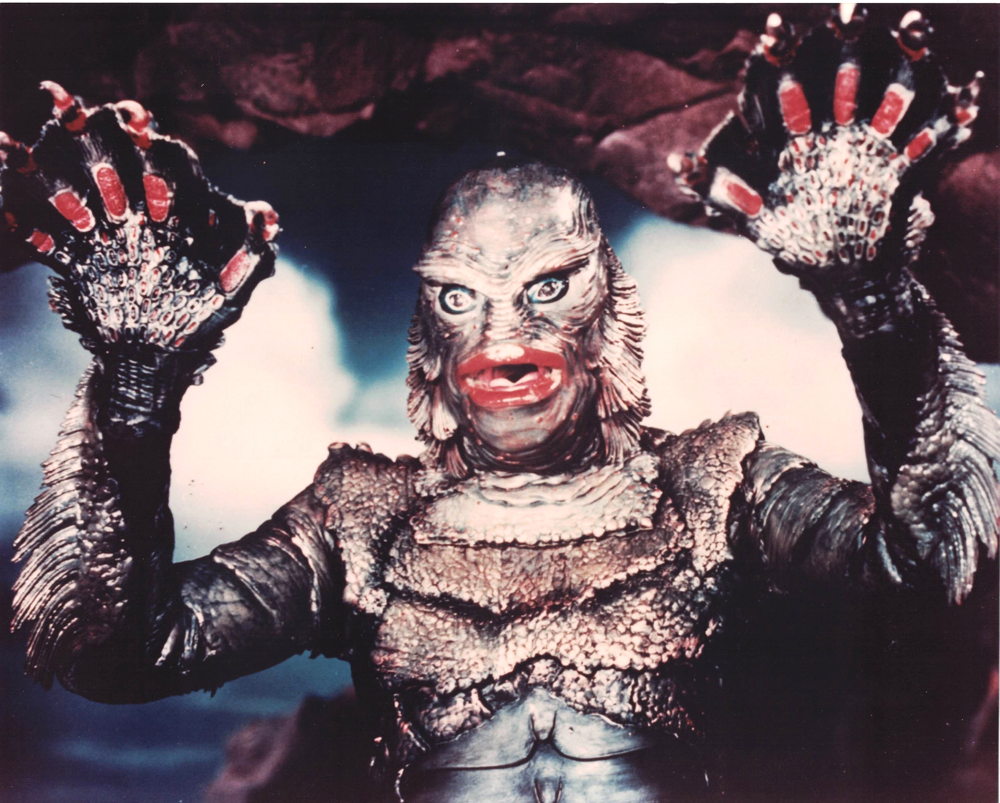

Product No. HEC-0061
$14.99
Shipping: $8.95
Description
8x10 photograph of the Creature
Full Description
"Creature from the Black Lagoon" is a 1954 American science-fiction horror film produced by Universal-International and directed by Jack Arnold. The movie introduced one of Universal's most famous monsters, the Gill-man, and became a major classic of 1950s horror cinema. The story follows a scientific expedition traveling into the Amazon after the discovery of a fossilized skeletal hand that appears to belong to an unknown amphibious humanoid species. The expedition includes Dr. David Reed, played by Richard Carlson, and Kay Lawrence, played by Julie Adams. While exploring a remote lagoon, the group discovers that a living creature of the same species still exists. The Gill-man, portrayed underwater by Ricou Browning and on land by Ben Chapman, becomes fascinated with Kay and repeatedly approaches the expedition. The scientists struggle between their desire to study the creature and the growing danger it poses to the group. "Creature from the Black Lagoon" was originally released in 3-D, taking advantage of the format's popularity during the 1950s. Its underwater photography and eerie lagoon setting helped give the film a distinctive look. The Gill-man became part of the celebrated Universal Monsters tradition alongside Dracula, Frankenstein's monster, the Wolf Man, and the Mummy. The film was followed by "Revenge of the Creature" in 1955 and "The Creature Walks Among Us" in 1956. Today, "Creature from the Black Lagoon" remains a favorite among classic horror fans and collectors of Universal Monsters memorabilia, movie posters, photographs, and autographs.
Condition
Excellent condition